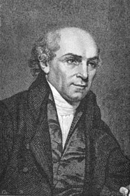

Partnering in Missions
My time with the missionaries was also helpful in causing me to appreciate those who have served faithfully for many years in Cambodia (and frankly, in similar conditions which can be found around the world). I was really challenged by how little I have prayed and have supported the missionaries were on the front lines, especially when I was brought face to face with all that they go through on a daily basis.
William Carey once famously said, “Well, I will go down, if you hold the rope.” The context of the quote is explained by Andrew Fuller, a man who helped to “hold the rope” for Carey all his life.
 William Carey
Our undertaking to India really appeared at its beginning to me somewhat like a few men, who were deliberating about the importance of penetrating a deep mine which had never before been explored. We had no one to guide us; and, most we were thus deliberating, Carey, as it were, said, ‘well, I will go down, if you hold the rope.’ But before he descended, he, as it seems to me, took an oath for each of us at the mouth of the pit, to this effect that ‘While we live, we should never let go the rope.’
The apostle Paul calls this “partnering” or “sharing” in his ministry (using the same root that is often translated “fellowship”; see Philippians 1:5, 7; 4:14-15). Paul did not see himself as doing ministry alone, for his “sending churches” were not just sending him, but were in a sense going with him. No matter where he was, the churches that were supporting him viewed his ministry as their ministry.
All that to say, this trip helped me to realize that in many ways, I’ve dropped the rope. Time to get on that.
Perhaps this is a good opportunity for you to consider the missionaries that you are supporting? Hearing from some of the missionaries in Cambodia, I was struck by how encouraging a letter or even a simple email could be for missionary who does not always have a solid fellowship of believers there on the ground with them. A quick note, though easy to underestimate, can sometimes be all it takes to remind a missionary that though there may be no one with them at the bottom of that pit, there is someone at the top still holding the rope.